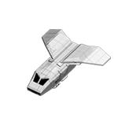

Shuttle
The SC-1907 shuttle is the pack mule of Martian colonization, it is used
to transport all kinds of materials between Mars and Earth. These goods
form the backbone of an early Martian economy, as credits from
exported iron and silica are the only notable source of income in
first years of colonization.
This spaceship will need 5 turns to travel between Mars and Earth, and
its cargo bays can carry 3000 tons of following goods:
- Food
- Stone
- Iron
- Lumber
- Silica

| Movement points |
0 |
| Attack |
0 |
| Defence |
0 |
| Production cost |
5000 |
| Upkeep cost |
100 |